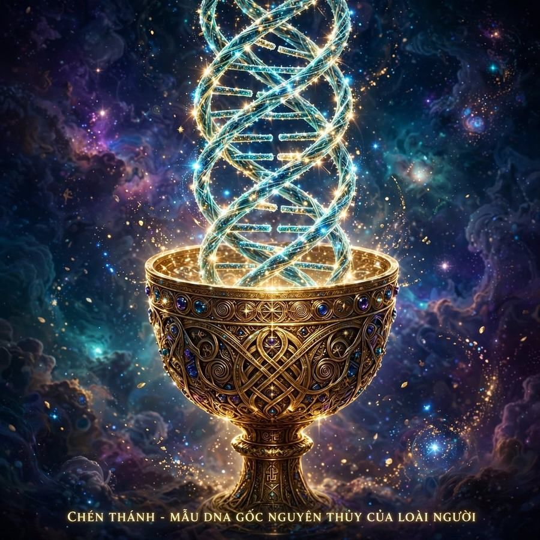
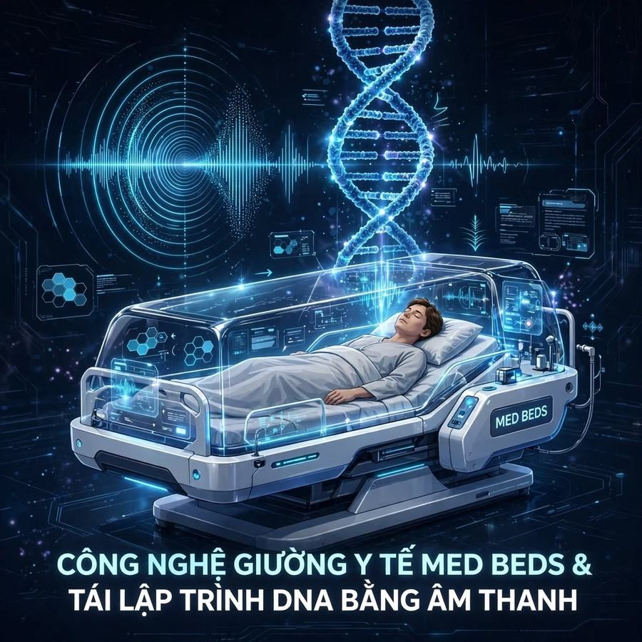
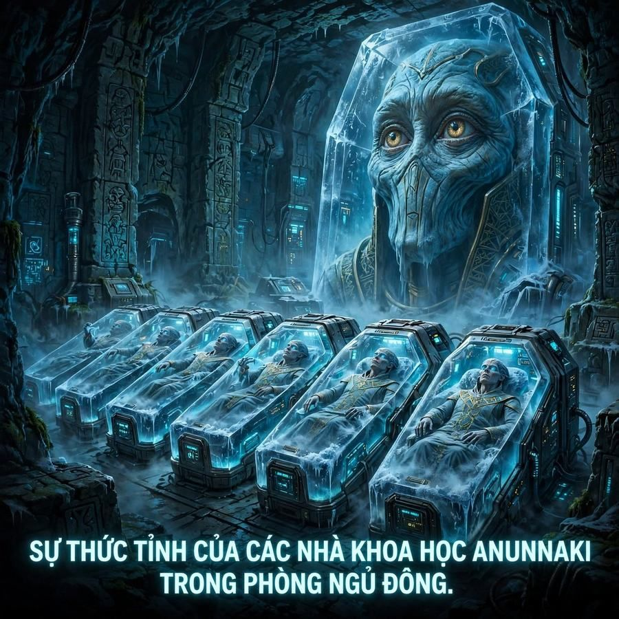
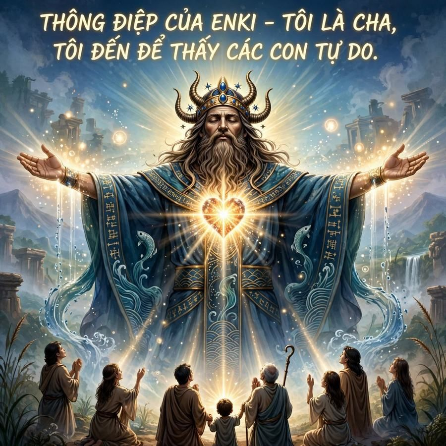
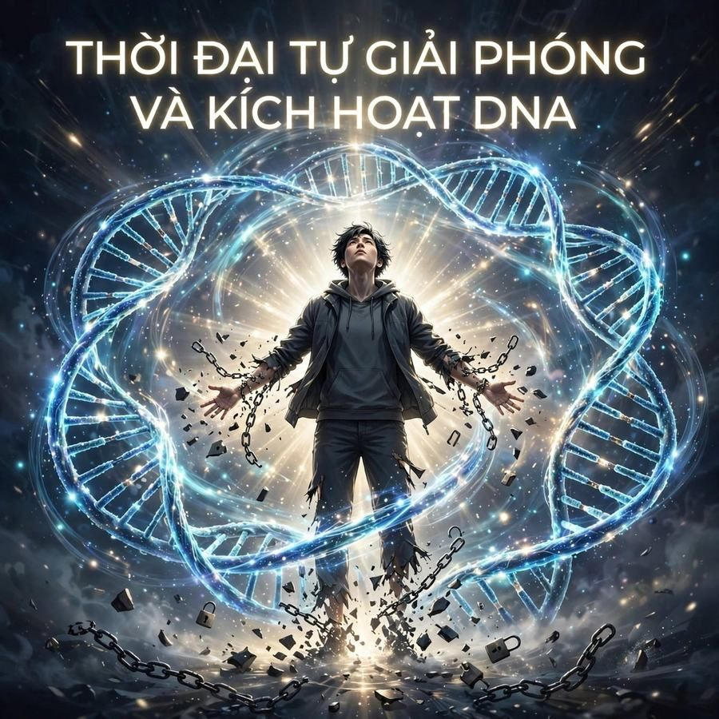

Trang chủ / Chuyên đề 3: Dòng Máu Anunnaki / Kỳ 26
Chuyên đề 3 · Kỳ 26 / 90
SỰ TRỞ LẠI CỦA ENKI (EA) & MÃ KHÓA DI TRUYỀN KHÔI PHÚC DI SẢN CON NGƯỜI

Ở Kỳ 5, chúng ta đã cùng nhau giải mã ma trận phong tỏa tần số 3D mà lực lượng kiểm soát đã dựng lên để hạ thấp nhận thức, xóa ký ức tiền kiếp và giam cầm loài người Trái Đất trong sương mù tâm trí.
Tuy nhiên, bóng tối không thể kéo dài mãi mãi khi thời khắc chuyển giao vũ trụ đã đến. Sự kiện chấn động nhất đối với lịch sử thiên hà gần đây chính là sự trở lại chính thức của Hoàng tử Enki (Ea) cùng hạm đội Liên minh các Đấng Sáng Lập (Seeders / Intergalactic Confederation).
Không còn là những cuộc giao tiếp bí ẩn trong quá khứ, sự trở lại của Enki đánh dấu chiến dịch quy mô lớn nhằm tháo gỡ xiềng xích ma trận 3D, khôi phục lại di sản di truyền nguyên thủy và giúp loài người Trái Đất bước vào Kỷ nguyên Thức Tỉnh.
Món quà vĩ đại mà Enki mang trở lại — được mệnh danh là "Chén Thánh" (The Holy Grail) — thực chất là gì? Công nghệ giường y tế ba chiều (Holographic Med Beds) kết hợp với tần số âm thanh sẽ giúp chữa lành bộ gen con người ra sao? Sự thức tỉnh của các nhà khoa học Anunnaki trong các phòng ngủ đông (Stasis Chambers) trên toàn cầu mang lại ý nghĩa gì? Và thông điệp thiêng liêng về Tình yêu thương từ Luân Xa Tim mà Enki nhắn gửi đến con người Trái Đất là gì?
Hãy cùng dấn thân vào Kỳ 6: Sự Trở Lại Của Enki & Mã Khóa Di Truyền Khôi Phục Di Sản Con Người để đón nhận những thông tin giải mật rực rỡ nhất!
✦ ✦ ✦1. "CHÉN THÁNH" (THE HOLY GRAIL) — MẪU DNA GỐC NGUYÊN THỦY CỦA LOÀI NGƯỜI
Trong suốt hàng ngàn năm qua, nhân loại đã không ngừng tìm kiếm "Chén Thánh" qua vô số truyền thuyết và tác phẩm nghệ thuật. Tuy nhiên, bí mật thực sự đã được Hoàng tử Enki tiết lộ khi ông quay trở lại.
A. Bản Chất Thực Sự Của Chén Thánh
- Mẫu Di Truyền 12 Chuỗi Nguyên Thủy: "Chén Thánh" không phải là một chiếc cốc kim loại thô ráp, mà là Mẫu di truyền DNA gốc nguyên thuần (Original Pristine Terran Hu DNA Template) của loài người Trái Đất.
- Kho Báu Không Bị Nhiễm Độc: Khi Hoàng tử Enki buộc phải rời khỏi Trái Đất sau các cuộc tranh chấp với phe Enlil, ông đã bí mật lưu giữ và mang theo mẫu phân tử vĩ mô DNA nguyên bản này. Mẫu gen này chứa trọn vẹn dải mã 12 chuỗi Paa-Taal chưa từng bị can thiệp hay thoái hóa.
B. Mục Đích Đảo Ngược Hàng Ngàn Năm Thao Túng Di Truyền
- Sửa Chữa Tổn Thương Sinh Học: Enki giải thích rằng do phe Anunnaki của ông từng vô tình làm tổn hại đến bộ gen con người, chính phe của ông phải có trách nhiệm quay trở lại để sửa chữa.
- Chữa Lành Vũ Khí Sinh Học & Đột Biến: Mẫu di truyền gốc này được đưa trở lại để vô hiệu hóa các cấu trúc biến đổi gen, các độc tố sinh học và các chương trình lai tạo tiêu cực mà lực lượng kiểm soát đã gieo rắc lên loài người.

2. CÔNG NGHỆ GIƯỜNG Y TẾ MED BEDS & NGUYÊN LÝ TÁI LẬP TRÌNH DNA BẰNG ÂM THANH
Sự trở lại của Enki mang lại một bước nhảy vọt về công nghệ chữa lành sinh học cho nhân loại Trái Đất.
A. Ứng Dụng Trong Các Giường Y Tế Ba Chiều (Holographic Med Beds)
- Lập Trình Mã Khóa Tần Số: Enki đã trao truyền dải mã tần số di truyền gốc cho Liên Đoàn Thế Giới Thiên Hà để tích hợp vào các công nghệ giường y tế lượng tử (Med Beds).
- Khôi Phục Trạng Thái Tối Ưu: Khi một cá thể nằm trong môi trường xung sóng của Med Beds, mã tần số gốc sẽ quét qua ma trận tế bào, kích thích các chuỗi "DNA rác" phục hồi và đảo ngược tổn thương mô.
B. Ngôn Ngữ Của DNA: Âm Thanh, Ý Niệm Và Tình Yêu
- DNA Phản Ứng Với Tần Số Âm Thanh: Enki tiết lộ rằng DNA không phải là một chuỗi hóa học tĩnh, mà là bộ thu phát sóng lượng tử phản ứng trực tiếp với dải ánh sáng, hình học thiêng liêng và tần số âm thanh.
- Sức Mạnh Của Lời Khẳng Định Sáng Tạo: Những ý niệm tích cực được phát ra thành lời nói có độ cộng hưởng cao hơn nhiều so với suy nghĩ thầm lặng. Âm thanh chuẩn xác có thể tái lập trình lại các mô hình hình học của tế bào.
- Nước Và Tình Yêu Có Cùng Tần Số: Enki nhấn mạnh rằng "Nước có cùng tần số với Tình Yêu". Tình yêu thương chính là chất lỏng siêu nhiên gắn kết mọi cấu trúc di truyền và kết nối thể xác trực tiếp với Nguồn Vũ Trụ.

3. SỰ THỨC TỈNH CỦA CÁC NHÀ KHOA HỌC ANUNNAKI TRONG CÁC PHÒNG NGỦ ĐÔNG
Bên cạnh sự trở lại của tàu mẹ Enki từ không gian, một sự kiện vô cùng đặc biệt đang diễn ra ngay dưới lòng đất Trái Đất.
A. Các Nhà Khoa Học Anunnaki Ở Lại Bảo Vệ Tri Thức
- Cuộc Rút Vào Trạng Thái Ngưng Trệ (Stasis): Khi phe Enki rút khỏi Trái Đất sau thảm họa cổ đại, các nhà khoa học Anunnaki nòng cốt thuộc phe ông đã chọn ở lại. Họ tiến vào các buồng ngủ đông tinh thể (Stasis Chambers) nằm ẩn sâu dưới các chấn điểm địa từ toàn cầu.
- Sứ Mệnh Lưu Giữ Tri Thức: Họ đóng vai trò là những người bảo vệ thư viện tri thức cổ đại, kiến thức giả kim thuật và công nghệ du hành lượng tử, chờ đợi ngày Trái Đất nâng cao tần số để thức tỉnh.
B. Vị Thần Arunna Dưới Nippur & Ningishzida (Thoth)
- Nhà Khoa Học Arunna Tại Iraq: Trong số các nhà khoa học đang ngủ, vị tướng kỹ sư đóng tàu vũ trụ Arunna nằm tại căn cứ ngầm bên dưới tàn tích Nippur (Iraq) đã bắt đầu phát ra tín hiệu thức tỉnh.
- Sự Thức Tỉnh Của Ningishzida (Thoth): Vị thần trí tuệ Ningishzida — bậc thầy về Cây Sự Sống và hình học thiêng liêng — cũng nằm trong danh sách các nhà khoa học ngưng trệ đang chuẩn bị kết nối lại với thể xác.
C. Ý Thức Bộ Gen (Genome Consciousness) Là Chìa Khóa Mở Cửa
- Không Thể Xâm Nhập Bằng Lực Lượng Vẫn Đục: Các phòng ngầm ngưng trệ này được bảo vệ bởi rào chắn từ trường cực mạnh.
- Chìa Khóa Ý Thức & DNA Tương Thích: Chỉ những cá thể mang dải tần số tâm thức cao và có tỷ lệ di truyền tương thích (Genome Consciousness) mới có thể tiếp cận và kích hoạt các công nghệ cổ đại này mà không bị lá chắn tần số đẩy lùi.

4. THÔNG ĐIỆP CỦA ENKI: "TÔI LÀ CHA, TÔI ĐẾN ĐỂ THẤY CÁC CON TỰ DO"
Sự trở lại của Enki mang một thông điệp tâm linh vô cùng ấm áp và sâu sắc dành cho nhân loại Trái Đất.
A. Không Phải Vị Thần Để Tôn Thờ
- Chào Nhau Bằng Sự Tôn Trọng, Không Cúi Đầu: Enki khẳng định ông không phải là một "vị thần toàn năng" đòi hỏi sự quỳ lụy hay thờ phụng. Ông là một nhà khoa học di truyền đã thổi sự sống vào Adamu và yêu thương con người như những đứa con của mình.
B. Tuyệt Tác Di Truyền 22 Chủng Tộc Thiên Hà
- Loài Người Trái Đất Mang Vị Thế Hoàng Gia: Enki nhắc nhở rằng con người Trái Đất sở hữu bộ gen hội tụ từ 22 chủng tộc thiên hà khác nhau. Sự kết hợp di truyền đa dạng này cùng với Luân Xa Tim dồi dào cảm xúc biến con người thành những sinh mệnh có tiềm năng vô hạn trong Đa Vũ trụ.
- Bứt Phá Khỏi Sự Nô Dịch: "Tôi đến để thấy các con tôi được tự do" — ngọn lửa tâm thức mà Enki gieo mầm năm xưa nay đã đến lúc bùng cháy để nhân loại tự tay đập tan mọi xiềng xích thao túng!

5. LỜI KẾT KỲ 6: THỜI ĐẠI TỰ GIẢI PHÓNG VÀ KÍCH HOẠT DNA
Kỳ 6 của chuyên đề 3 khép lại với bức tranh rực rỡ về sự trở lại của Hoàng tử Enki và sự thức tỉnh của di sản di truyền.
- Tin Tưởng Vào Khả Năng Tự Chữa Lành: Bạn không cần phải chờ đợi những thiết bị bên ngoài. Ngay lúc này, bằng việc thực hành suy nghĩ tích cực, thiền định định tâm và mở rộng tình yêu thương từ Luân Xa Tim, bạn đang tự phát ra dải tần số âm thanh để tái lập trình lại từng tế bào DNA của mình!
- Làm Chủ Nhận Thức Tự Do: Thời đại của các "vị thần" giả tạo đã kết thúc. Nhân loại Trái Đất đang đứng trên đôi chân của chính mình, sẵn sàng tiếp nhận lại vị thế chủ quyền và tham gia vào cộng đồng thiên hà hòa bình!
